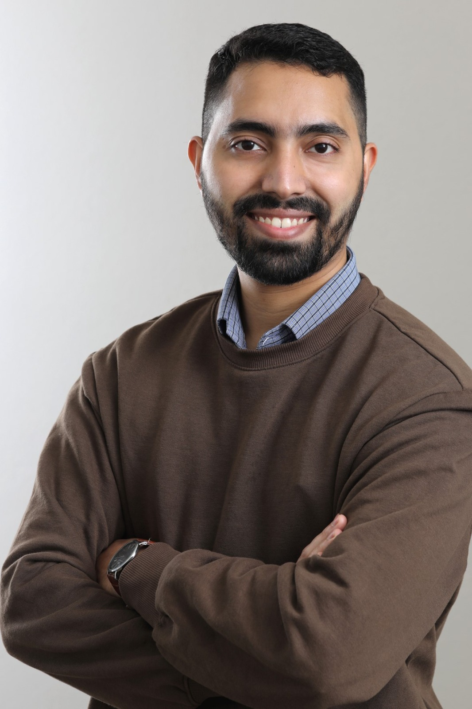

|

|
SHEIKH MINHAJ LIAQAT
Prospective PhD student | Research Enthusiast
Email: sheikhminhajliaqat [at] gmail [dot] com
Address: Reichenhainer Straße 51/14, 09126, Chemnitz, Saxony, Germany
 LinkedIn
LinkedIn
|
I am a prospective PhD student with research and practical interests
in VLSI and digital hardware design. Through my master’s in Micro and Nano Systems at TU Chemnitz,
I have gained expertise in circuit design, simulation, and semiconductor processes.
I aim to develop innovative hardware solutions that advance both theoretical understanding and real-world applications.
Research Interests
Technical Focus
ANSYS Workbench, ANSYS APDL (thermal & structural simulation); Autodesk Inventor, AutoCAD (mechanical design);
Digital, analog, and RF circuits; Verilog-HDL, VHDL; Arduino;
Cadence, Proteus, DSCH, Microwind (layout);
CST Studio Suite (electromagnetic simulation);
Semiconductor processes: lithography, etching, PVD, CVD, ALD;
MATLAB/Simulink; Python, Java.